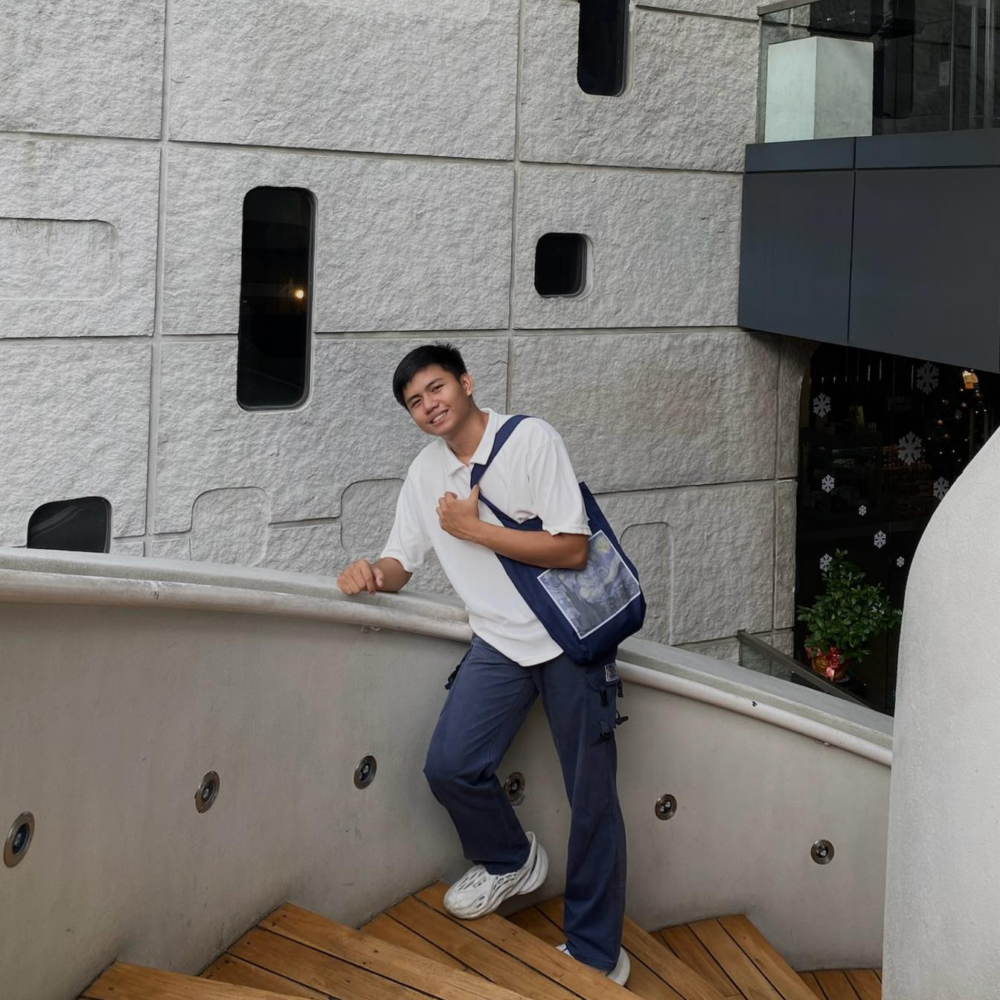

<!DOCTYPE html> 
<html lang="en" dir="Itr"></html>

<head>
    <meta charset="UTF-8">
    <meta name="viewport" content="width=device-width, initial-scale=1.0">
    <title>My Portfolio</title>
    <link rel="stylesheet" href="style.css">
    <link rel="stylesheet" href="https://unpkg.com/aos@next/dist/aos.css" />
    <link rel="stylesheet" href="https://cdnjs.cloudflare.com/ajax/libs/font-awesome/6.5.2/css/all.min.css">
</head>

<body>
   <!-- navigation menu -->
<nav>
    <div class="nav-container">
        <div class="logo" data-aos="zoom-in" data-aos-duration="1500" data-aos-delay="100">
            <span>Miguel</span>
        </div>
        <div class="links">
            <div class="link" data-aos="fade-up" data-aos-duration="1500" data-aos-delay="100"><a href="#">Home</a></div>
            <div class="link" data-aos="fade-up" data-aos-duration="1500" data-aos-delay="200"><a href="#">About Me</a></div>
            <div class="link" data-aos="fade-up" data-aos-duration="1500" data-aos-delay="300"><a href="#">Hobbies/Interest</a></div>
            <div class="link" data-aos="fade-up" data-aos-duration="1500" data-aos-delay="400"><a href="#">Skills</a></div>
            <div class="link" data-aos="fade-up" data-aos-duration="1500" data-aos-delay="500"><a href="#">Projects & Activity</a></div>
            <div class="link" data-aos="fade-up" data-aos-duration="1500" data-aos-delay="600"><a href="#">Achievements</a></div>
            <div class="link" data-aos="fade-up" data-aos-duration="1500" data-aos-delay="700"><a href="#">Contact</a></div>
        </div>
        <i class="fa-solid fa-bars hamburg" onclick="hamburg()" aria-label="Toggle navigation menu"></i>
    </div>
</nav>


    <!-- Main Section -->
    <section>
        <div class="main-container">
            <div class="image">
                
            </div>
            <div class="content">
                <h1 data-aos="fade-left">
                    Good day! I am <span>Carlos Miguel P. Calub!</span>
                </h1>
                <div class="typewriter">IT1A</div>
                <span class="typewriter-text"></span>
                <label for=""></label>
                <p style="text-align: justify;"> I’m Carlos Miguel P. Calub from IT1A. I chose the IT course because it has been my dream since high school. My other option was to become a basketball player, but I decided to pursue a degree in BS Information Technology. I want to learn more about this field, and I expect that, with the help of my teacher (Prof. Mar Eli Sagsagat), who is very good at teaching, I will gain a better understanding of how this course works. I am excited to develop important skills, such as web development, coding in JavaScript and Python, and improving my knowledge in technology. I want to work hard, stay motivated, and make the most of this opportunity to achieve my dreams and build a successful career in IT.</p>
                <div class="social-links">
                    <a href="#"><i class="fa-brands fa-github"></i></a>
                    <a href="#"><i class="fa-brands fa-facebook"></i></a>
                    <a href="#"><i class="fa-brands fa-linkedin"></i></a>
                    <a href="#"><i class="fa-brands fa-twitter"></i></a>
                </div>
            </div>
        </div>
    </section>

    <!-- About Me Section Start -->
    <section class="about" id="about">
        <div class="content">
            <div class="title"> <span>About Me</span></div>
            <div class="about-details">
                <div class="left">
                
                </div>
                <div class="right">
                    <div class="topic">MY JOURNEY IN TECHNOLOGY</div>
                    <p style="text-align: justify;">As a freshman in Information Technology, I may not have many achievements yet, but I believe my past experiences are significant. I graduated from the STEM track in Senior High School, where I built a strong foundation in science, technology, engineering, and mathematics. I originally studied at De La Salle Araneta University but transferred to the University of the East Caloocan because it offers my course. Even though I am just starting my journey at BSIT, I know my past accomplishments can serve as motivation to help me build a successful future in this field. I am excited to learn and grow throughout my studies, and I am confident that my previous experiences will help me succeed. More importantly, while I am still adjusting to the systems and learning new skills, such as coding, web development, and problem-solving, I hope these will help me grow and achieve my goals in the IT field. My ultimate goal is to graduate as soon as possible so I can help my family enjoy a better life, especially for myself.</p>
                    <div class="right">
                        <div class="topic">HOBBIES & INTEREST</div>
                    <p style="text-align: justify;">In addition, my hobbies include playing basketball and playing games. I do these activities to help relieve stress and clear my mind. They give me time to think about what I need to do next. I used to play games like Valorant and Mobile Legends, but now I no longer play them. Instead, I focus on staying physically fit and keeping my body healthy. Also, my main interest in life is having my own business. Currently, we sell tote bags and T-shirts, and I am learning every day to grow my business and become a better version of myself.
                    
                    <button>Download CV & RESUME</button>
                </div>
            </div>
        </div>
    </section>

        <!-- My Skills Section Start -->

    <section class="skills" id="skills">
        <div class="content">
            <div class="title"><span>My Skills & Projects & Activity</span></div>
            <div class="skills-details">
                <div class="text">
                    <div class="topic">
                        FRESHMAN AND BEGINNER PROGRAMMER
                    </div>
                    <p data-aos="fade-right"> I am currently studying, and this is my first year experiencing programming and creating websites using tools like Python, Visual Studio Code, and more. I am a freshman taking a Bachelor of Science in Information Technology (BSIT). I am a beginner in coding, website creation, and other tasks related to Information Technology. </p>

                    <p data-aos="fade-right"> Here are my skills, projects, and activities, with labels or topics and a percentage showing how good I am at each. First is Web Development. When it comes to developing websites, I remember that back in 7th grade, I worked on a website using Notepad. Now, I am learning that we can create websites using Visual Studio Code. I rated myself at 50% because I am still adjusting to how Visual Studio Code works and figuring out how I can improve my skills with it. Second is Programming Languages, specifically JavaScript and Python. I rated myself at 30% because, at first, I had no idea how coding works. Every day, I struggle with learning how to code in Python. With the activities given to us, I find it challenging, and the worst part is that I sometimes receive the lowest grades. However, I am determined to learn how to code, especially in Python and JavaScript. Next is Research Skills. Back in 12th grade, my group and I achieved several awards, including Best in Research and Best in Presentation. I remember how our teacher guided us, and we applied her teachings to improve our research. I rate myself at 80% because, even with those achievements, I am not fully satisfied. I aim to improve further by learning more, using technology, and understanding how research will apply to this course and our future projects. Lastly, I am fully confident in my communication skills. As an online seller, I engage with different people daily, which has helped me develop strong communication skills. I rate myself at 100% because I practice and use these skills every day. I believe this ability will be valuable in the future, especially since my dream is to work from home, earn money quickly, and enjoy life at the same time.</p>
                    </p>
                    <div class="experience">
                        <div class="num">1</div>
                        <div class="exp">
                        Year of<br/>
                        Experience
                    </div>
                    </div>
                </div>
                <div class="boxes">
                    <div class="box">
                        <div class="topic">WEB DEVELOPMENT</div>
                        <div class="per">50%</div>
                    </div>
                    <div class="box">
                        <div class="topic">JavaScript % Python</div>
                        <div class="per">30%</div>
                    </div>
                    <div class="box">
                        <div class="topic">Research Skills</div>
                        <div class="per">80%</div>
                    </div>
                    <div class="box">
                        <div class="topic">Communication Skills</div>
                        <div class="per">100%</div>
                    </div>
                </div>
            </div>
        </div>
    </div>
    </section>
    
    


    <!-- My Services Section Start -->
    <section class="services" id="services">
        <div class="content">
            <div class="title">
                <span>My Achievements</span>
            </div>
            <div class="boxes">
                <div class="box">
                    <div class="icon">
                        <i class="fas fa-mobile"></i>
                    </div>
                    <div class="topic">Online Games Achievements</div>
                    <p style="text-align: justify;">During the pandemic, when we were all in lockdown, I became addicted to playing Mobile Legends Bang Bang on my cellphone. At first, I didn’t know 
                        what the game was, but I found out about it through my friends. After that, I started playing every day and night, actually all day long. I even joined a team for competitions and also had a team in my school. We competed online in a tournament called KADSA. I was in Grade 11 at that time, and we won first place. As a result, I received a La Salle medal and a cash prize. I used the money to buy a new bike. That’s how I achieved success in online gaming.

                    </p>
                </div>
                <div class="box">
                    <div class="icon">
                        <i class="fas fa-graduation-cap"></i>
                    </div>
                    <div class="topic">Academic Achiever</div>
                    <p style="text-align: justify;">During the pandemic, when we had online classes, that’s when I started achieving in academics. The pandemic helped me 
                        change and focus more on my studies. I worked hard to become a better version of myself and aimed to graduate with honors. I am very grateful because I prayed for it and worked hard to achieve it. Honestly, I believe that dreams do come true. When you set a goal for yourself, you can achieve it with the help of God and your own efforts. From Grade 9 to Grade 12, I received medals for "With Honors" and "With High Honors." With motivation and discipline, any dream or goal can become a reality.
                    </p>
                </div>
                <div class="box">
                    <div class="icon">
                        <i class="fas fa-chart-line"></i>
                    </div>
                    <div class="topic">Digital Marketing</div>
                    <p style="text-align: justify;">My journey in digital marketing started when I was in Grade 11. It all began with selling to my classmates. At that time, I sold tote bags, and our sales were successful. From there, I expanded to selling tote bags and shirts, both online through platforms like Shopee, Facebook, Instagram, and others. We used the internet and digital technologies to 
                        promote our products and build our brand. In terms of strategies, we focused on social media, online ads, and websites to reach customers. However, I'm still working on finding better ways to engage with my audience. My goal, since Grade 11 and up to now, has always been the same: I want to have a better life, and I will continue to sell because it is clean money, and I believe it doesn't hurt anyone.</p>
                </div>
                <div class="box">
                    <div class="icon">
                        <i class="fas fa-microscope"></i>
                    </div>
                    <div class="topic">Best in Research</div>
                    <p style="text-align: justify;">My journey in research was challenging, but hard work really does pay off. At first, my group and I struggled, but we believed that through communication and teamwork, we could improve. Every day, we received negative feedback from our teacher, but instead of being discouraged, we used those comments as motivation to get better. When we faced 
                        setbacks, we didn't give up. During presentations to our teacher and at the defense, we were able to answer every question confidently because our research was solid. We even competed in the KADSA research tournament at La Salle and won the "Best in Research" award because our work was well-researched and thorough. We knew our 
                        research inside and out and were prepared with references to answer any questions asked. This achievement showed us that failure can be a powerful tool for improvement. With 
                        hard work, motivation, and discipline, we can always achieve more. Our goal is to continue being the best in our field and never stop striving for excellence.</p>
                </div>
                <div class="box">
                    <div class="icon">
                        <i class="fas fa-video"></i>
                    </div>
                    <div class="topic">Video Vlogging or Motovlogging</div>
                    <p style="text-align: justify;">For me, one of my greatest achievements is video vlogging or motovlogging, which has also become one of my hobbies. When I create videos, 
                        whether for myself, a group, or a partner, they represent memories that I will cherish the most. Every video I capture is my way of preserving moments, as we are not permanent in this world. It's important to film and take photos every day to create memories, because we only have one life. We should enjoy life to the fullest and always remember that, whenever we feel sad, we can smile and keep going. Every day, we learn and grow, and every day offers an opportunity to do something that helps us become better people.


                    </p>
                </div>
                <div class="box">
                    <div class="icon">
                        <i class="fas fa-basketball-ball"></i>
                    </div>
                    <div class="topic">Basketball Achievements</div>
                    <p style="text-align: justify;">When I was in Grade 11 and Grade 12, I achieved success in basketball. In Grade 11, my team and I placed 2nd. We didn't have much time to practice—only about two weeks—while 
                        our opponents were well-prepared and in great condition, which led to our loss. However, in Grade 12, I was determined to get revenge. I worked hard and smart to prepare myself and my team. In the KADSA Basketball Tournament, we defeated all our opponents and became champions. I received medals and a certificate for that achievement. Additionally, during the summer in our barangay, I earned the Mythical 5 award in SK Marulas. I also won a trophy in the 3x3 tournament in Gen T De Leon, Valenzuela. I am proud of 
                        all the hard work I put in and the results it brought. I’m excited to maintain this mindset and continue improving day by day.</p>
                </div>
            </div>
        </div>
    </section>

    <!-- Contact Me Section -->
    <section class="contact" id="contact">
        <div class="content">
            <div class="title">
                <span>Contact Me</span>
            </div>
            <div class="text">
                <div class="topic">Do you have any concerns or questions?
            <p style="text-align: center;">You can contact me through my social media:</p>
            <p style="text-align: center;">Facebook: Carlos Miguel Calub</p>
            <p style="text-align: center;">Instagram: Carlos Miguel Calub</p>
            <p style="text-align: center;">YouTube: Miguel Vlogz</p>
            <button>Let's Chat</button>
            </div>
        </div>
    </section>

    <!-- Footer Section Start -->
    <footer>
        <div class="text">
            <span>Created by: Carlos Miguel P. Calub<a href="#"> Miguel | </a>
            &#169; 2024 All Rights Reserved</span>
        </div>
    </footer>

    <!-- Scripts -->
    <script src="https://unpkg.com/aos@next/dist/aos.js"></script>
    <script>
        AOS.init({ offset: 0 });
    </script>
    <script src="script.js"></script>
</body>

</html>
